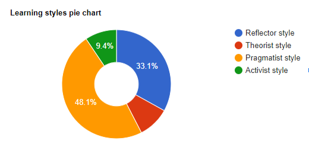
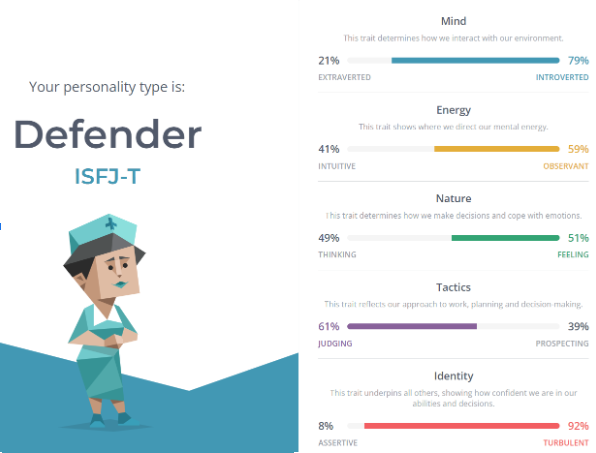
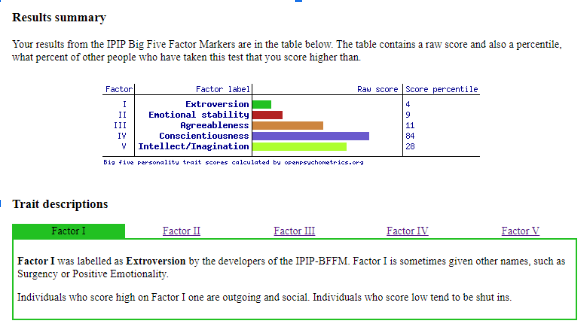

My Profile
Personal Infomation
Name: Helen Isabella Jean Andrews
Student Number: s3965754
Student email address: S3965754@student.rmit.edu.au
Basic Information

Picture with the ginger fur family, Lexi 10 month old kitty
G’day, I’m Helen from Launceston, Tasmania, I’ve lived here my whole life, I love the “big cities” of Australia but not enough to move to one! I prefer my 15 minute commute from one side of the town to the other with the ability to park easily, generally outside the shop you want to enter without doing 3 laps of the block!
I enjoy gaming during winter months when it's too dark and cold to go outside, I’m a massive fan of Lego games! I have quite the collection of them now and aim to finish all the achievements possible to 100% the games. I am currently playing through Lego Harry Potter and Lego City Undercover. There are so many achievements to gather from all the games. I mainly play on my xbox but also own a PS4, Switch and my gaming computer which doesn’t get used to its full potential!
I have been working full time for a health insurance company as an Applications Support Administrator for nearly 5 years. During this time our roles have evolved from only supporting core applications to designing and implementing new features to work alongside the core application via API integration.
The past 8 years I have been studying various IT courses through Tafe, Online short course and DDLS. All of these experiences have led me to study at a higher education level by completing my Bachelors of Information Technology.
Interest in IT

Picture with the ginger fur family Louie (8 year old Boxer X Corgi doggo)
My main interest in IT is learning coding, as the company I work for is implementing new digital platforms with the use of API’s our team has been tasked with designing, implementing and maintaining the new platforms our company requires. I find the way an API can pull or push information from a SQL database fascinating. Another area I am interested in is AI machine learning, I am still very new to exploring how it all works and can’t wait to deep dive further into it and possibly have a go at something of my own in the future.
Unlike the kids these days who grow up surrounded by technology, my family got our first computer when I was around the age of 10. Back in the day when solitaire was the best free game that came with the computer, I could never get anymore than a few clicks into minesweeper without hitting a bomb. My brother is my inspiration into computers, he is very clever and it all comes almost naturally to him. I rely on him to fix my computer issues and he relies on me to put together flatpacks, as while he has all the brains he isn’t very practical! When I decided it was time to move on from the fast food industry I sat down with my brother and we discussed my options into the IT work space, we thought it best to start from the beginning and enroll in certificates at Tafe Tas to see what sparked my interest while completing the course, through Tafe I have certificate 2 and 3 information technology, cert 3 in media and cert 4 digital media, I found all of these course interesting and hadn’t narrowed down a space to work in when an opportunity to work for a Tasmanian owned health fund as a system administrator became available, I applied and was successful, that was nearly 5 years ago and since starting I have been exposed to a number of different areas in the IT field, such as help desk, project management, infrastructure, system maintenance, documentation, development and deployment amongst other IT related fields. The experience has been good and I enjoy that not every day is the same, but it does make it difficult to get into any sort of routine as day to day is different.
I chose RMIT as the university offered fully online study which is suitable to my current working and home situation, this giving me the ability to plan my daily/weekly tasks without the need to attend a classroom at a particular time. I also read good reviews online when looking around for which courses would suit my lifestyle and learning abilities.
I expect during my learning with RMIT to expand my current skills and learn new technologies that I can implement in my working career and daily life. Upskilling I believe is one of the most important skills to keep on top of in your life, there are new technologies being implemented every day and if you don’t keep up with emerging technologies (like I didn’t after school) it takes a while to catch up!
Ideal Job


The job I have chosen would suit a Junior entering into the Software Development space who has minimal experience in this area but potential to learn and grow within the company. The position sounds a good fit for myself as it's a learning role within an industry I am currently working in but I am in front end application support whereas this role would be more the development side which interests me.
Job position requests that you have a Bachelor’s Degree in the IT area or equivalent qualifications. Finishing the Bachelor's degree would give me the basic knowledge into areas such as git and/or GitHub, Python, PHP. Experience in programs Mirth, FHIR, HL7 would unlikely be gained before being successful into the position. I have current work experience in the Health Insurance industry, with the company designing and implementing applications for its customers to use, these are maintained by the team I work in.
To be able to apply for this or similar positions in the future I will need to continue my study by completing the Bachelors of IT. Being able to put myself forward for any work experience that may arise in the industry will give me a snapshot into the programs used within the company.
Personal Profile
  My Learning Style has my two main results with Reflector Style at 33.1% and Pragmatist 48.1%, these results have given me some indications as to what I need to work on to make my working life more efficient, for both me and my team mates. Working together as a team is an integral part of any organisation without teamwork projects wont reach their full potential and the customer or consumer is disadvantaged.
The ability to know your strengths and weaknesses going into a team environment allows you and your team to work together to make a stronger, more efficient team. Adjusting your behaviour to reach your full potential within a team makes the project run smoothly and on time.
When forming a team, knowing everyone's results to formulate a plan to ensure the best possible outcome is achieved for the team, company, project and client.
Project Idea
Overview:
For my project idea I would like to invent an app for mobile an “all year round vegetable planting guide” based on your region. Based on your location the app will show you which vegetables can be grown now in your area at the current time of year. It will have sections for “tips and tricks” , a forum for other users to ask and answer questions, local meet ups to swap excess crops, notifications of growing stages and alerts to let you know when/what/how crop management needs to be completed. Other sections to the app could include a scanner to identify crops, recipe ideas for grown crops and a planting tracker where you can set up the layout of your garden, sun direction, shade have potential crops to grow based on layout of the garden.
Motivation:
As a keen gardener in my free time there are no applications that I’ve found that can help me on my journey to a regular rotation of vegetables, what to do with excess crops and cooking ideas from harvested produce. Now that the price of both fruit and vegetables are rising due to weather conditions, more and more people are looking to plant their own crops. Planting a vegetable garden can even be fulfilled on a balcony of an apartment building, you don’t need a backyard. There are a huge number of Australians and world wide looking to start their own gardens, it is a good activity to get your children involved, especially if they’re old enough to work the app for you. Mixing technology and nature while reducing environmental impacts by growing your own, sharing excess and composting waste while learning and teaching future generations.
Description:
There will be several different tabs in the application all relating to the production of vegetables in your region.
Tab 1. Tips and tricks – this tab will have a search function either via image scanning to identify the crop and give you care information about it, by text input where you can search a specific type of vegetable and have the information shown and whether it can be grown in your area. The ability to search vegetables that can be grown in your location with further ability to narrow search down by, seasonal and sow or seedling planting types.
Tab 2. Forums sections – set up by usernames, you will have the ability to post a question, follow threads, comment on threads and set up community meets in a continuous feed with options to narrow down content and/or swap between threads.
Tab 3. Scanner to identify seasonal crops, the ability to open your camera from within the application and have it scan your crop and identify what the plant is, once identified it will link you to the Tip and tricks section opening on the appropriate vegetable information and care page.
Tab 4. Recipes – This can be linked from Tips and Tricks, when you are on a particular vegetable it will have a link to the recipes that have the vegetable included in them. It will also have its own tab where you can search by vegetable type or scroll through based on Breakfast, lunch, dinner, snack, dessert etc.
Tab 5. Garden layout – the ability to set up a rough outline of your garden beds, what you have planted where and the amount of sun each bed gets per day. This could also include hints on what to plant, where and care for the plant, as well as crop rotation based on previous season planting.
Overall, the application should be a guide to help you become self-sufficient in producing your own crops of vegetables all year around by giving you step by step guides on the maintenance of plants to ensure a continuous rotation of seasonal vegetables.
Tools and Technologies:
The application itself would need to be built using a programming language such as JavaScript, C++ or C# or an application such as “Appy Pie” where you pay a monthly subscription but is designed for users without coding experience to create their own applications.
The scanning section of the application would need to use Augmented Reality Technology to identify the plants.
Other tools required are a working computer/keyboard/mouse/monitor with an internet connection, specific coding software such as Atom and command line. Picture editing tools such as Adobe photoshop. Microsoft suite for documentation, pen and paper for wireframe and then AdobeXD for digital wireframes, developer accounts for IOS and Android, multiple mobile phones for testing or software such as BrowserStack that can test 3000+ browsers and devices. There will also need to be considerations into Cyber Security and keeping consumers information safe.
Skills required:
Ideally you would want to hire a company that has many skills in programming languages such as JavaScript, C++ and C#, the ability to develop across different platforms, cyber security procedures, project management as well as UI experience. Hiring a company to fulfill the application where they have the skill and knowledge required to finish the application would be an option to consider.
Outcome:
If the project is successful, it will help everyday people grow vegetables in their own backyards, reducing waste of produce. It will also be good for the environment by reducing the carbon footprint from trucks delivering produce around the country from farms and reduce waste from supermarkets not accepting not perfect vegetables.
The development of the application will help a wide variety of consumers become self-sufficient from growing their own produce, being able to share with the community and aid those who require help through the forums.
At the end of the development there will be an application that is fully functional with other consumers that will provide lifelong education to people who want to grow their own vegetables but are unsure on how to go about this. It will solve some of the prices of vegetables when they’re not in demand when a bad growing season has occurred as people will have their own supply of vegetables they can rely upon.